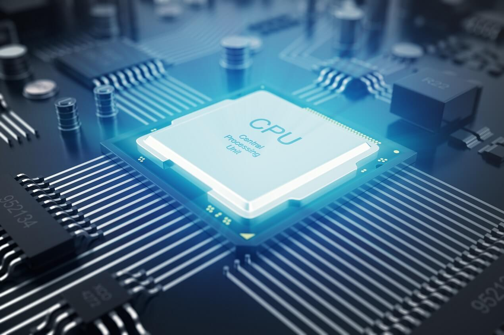
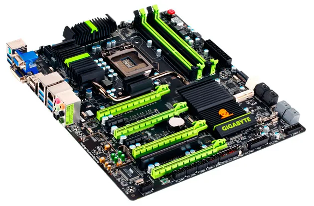
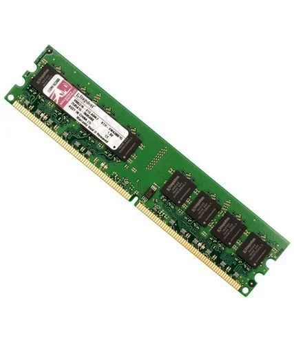
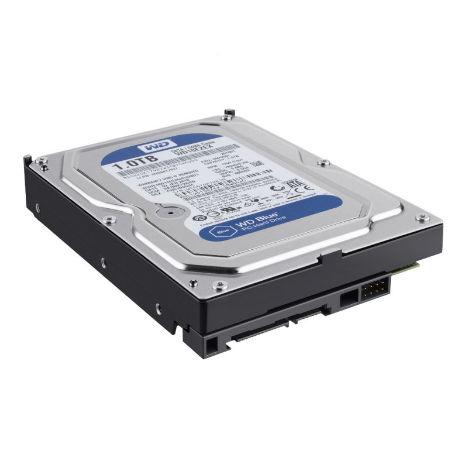
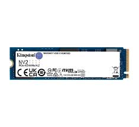
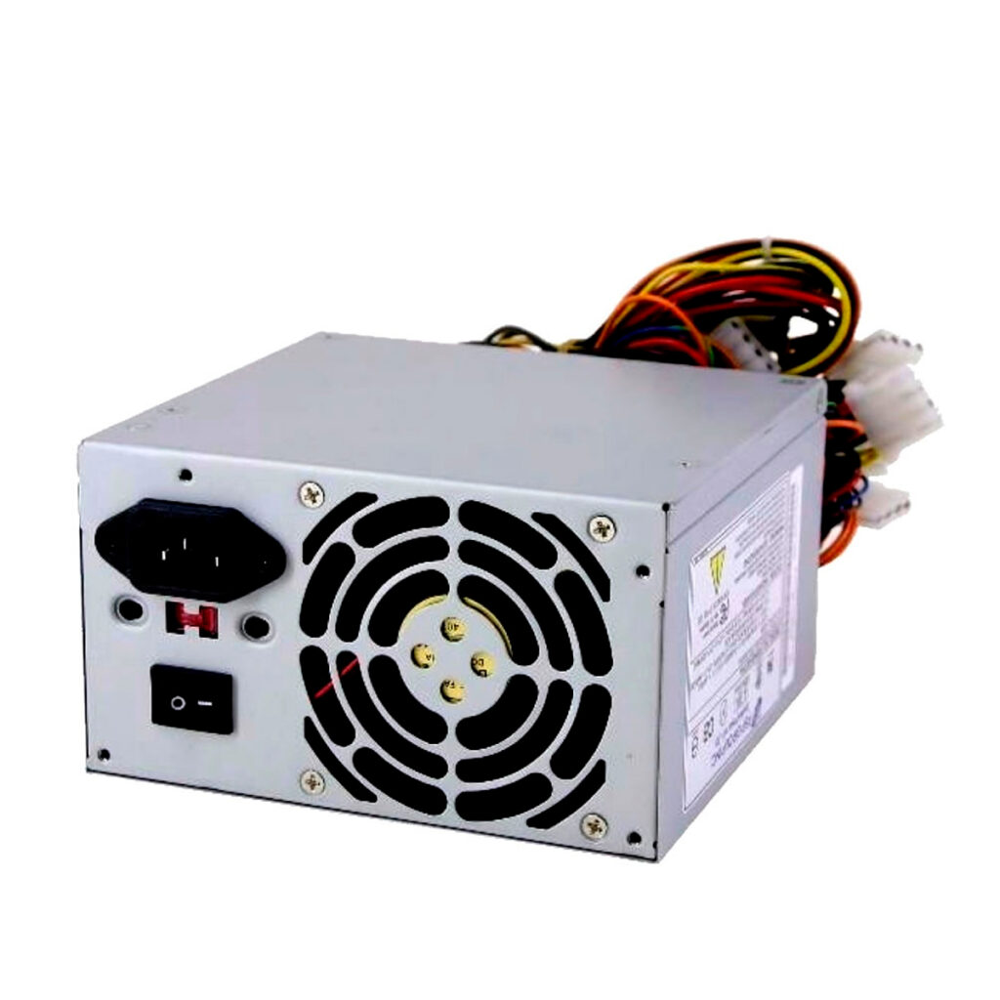

| Componente |
Descripción |
Imagen |
| CPU |
El cerebro del computador, encargado de procesar instrucciones. |
 |
| Placa Base |
Conecta todos los componentes y permite la comunicación entre ellos. |
 |
| RAM |
Memoria temporal para almacenar datos de forma rápida. |
 |
| GPU |
Procesa gráficos y mejora el rendimiento visual. |
 |
| Disco Duro |
Dispositivo de almacenamiento principal que guarda datos permanentemente. |
 |
| SSD |
Más rápido que el HDD, utiliza memoria flash para almacenar datos. |
 |
| Fuente de Poder |
Convierte corriente alterna en continua para alimentar componentes. |
 |
| Gabinete |
Estructura que alberga todos los componentes del computador. |
.jpg) |
| Sistema de Refrigeración |
Mantiene los componentes a una temperatura adecuada. |
.jpg) |
| Periféricos |
Dispositivos externos que permiten la interacción con el computador. |
.jpg) |